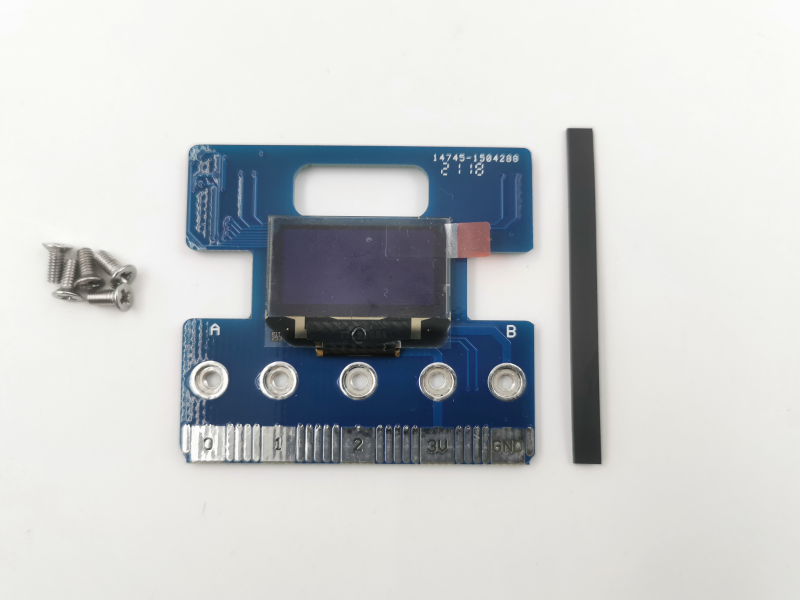
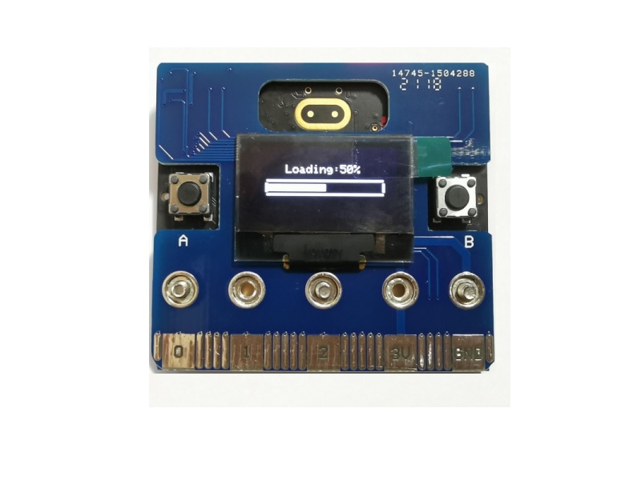
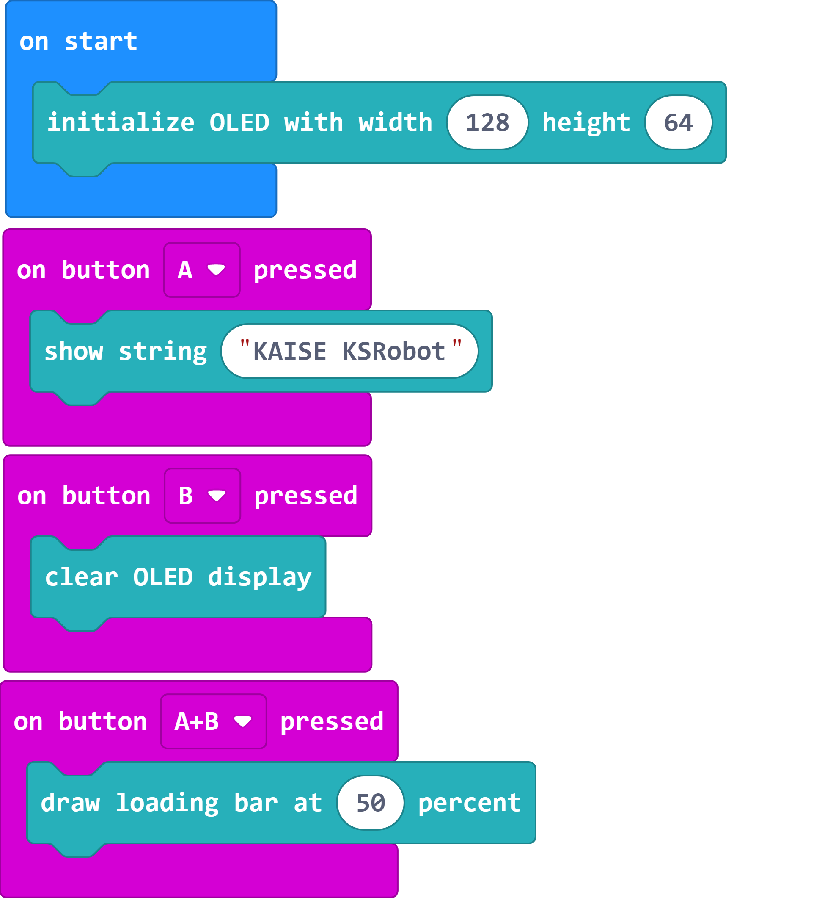
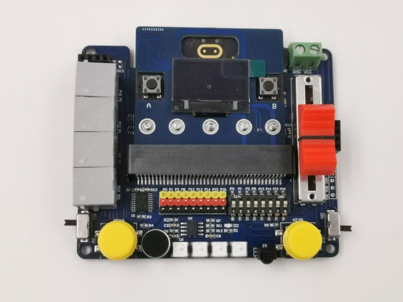

KSB057 OLED 顯示板
簡介

micro:bit本身就有5x5的LED可以顯示資訊，但是一次只能顯示一個數字實在是不太方便，因此使用OLED顯示器，以呈現出更多的訊息。KSB057 OLED Board 拓展了micro:bit edge，所以可以很方便的插在其它擴展板上做更多應用。
產品規格
0.96吋 OLED 擴展板 *1
尺寸：51.6 x 47 mm
組裝說明
基本範例
範例下載：選範例後再另存連結
擴展積木：https://github.com/tinkertanker/pxt-oled-ssd1306
範例一 OLED 範例
打開瀏覽器連結 https://makecode.microbit.org/
「 匯入 」-> 「Import File」 匯入 microbit-KSB057_EX1.hex

Download完成，按 主板A鍵 會出現 KAISE KSRobot ，按 主板B鍵 會清除畫面，按 主板A+B鍵 會出現進度條
應用圖示
